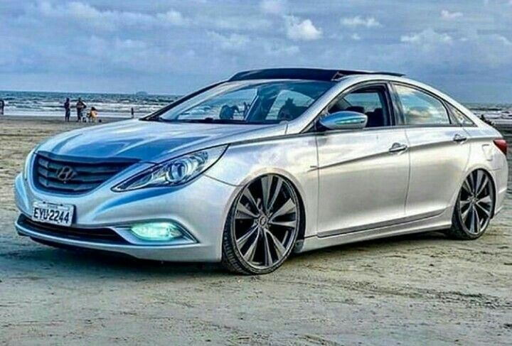
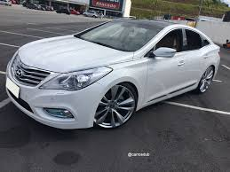
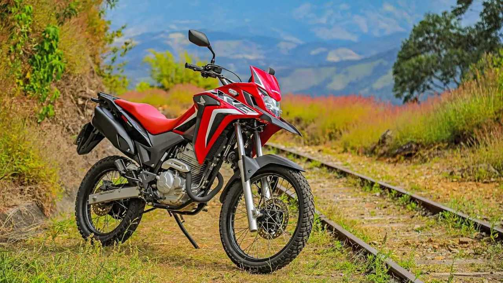

Honda Civic 2010
Lançado: em 2010

O Honda Civic 2010 é um carro que conquistou muitos fãs ao longo dos anos devido à sua confiabilidade, estilo e desempenho. Com um design aerodinâmico e moderno, o Civic 2010 se destaca em termos de aparência e funcionalidade. Seu interior espaçoso e bem projetado oferece conforto tanto para o motorista quanto para os passageiros, tornando as viagens mais agradáveis.
Sob o capô, o Civic 2010 pode vir equipado com um motor de quatro cilindros que oferece uma boa combinação de economia de combustível e potência. Sua dirigibilidade ágil e responsiva torna a condução em áreas urbanas e rodovias uma experiência prazerosa.
Além disso, a reputação da Honda em termos de confiabilidade e durabilidade reflete-se no Civic 2010, tornando-o uma escolha popular no mercado de carros usados.
Com sua combinação de estilo, desempenho e confiabilidade, o Honda Civic 2010 continua a ser uma opção atrativa para quem procura um carro compacto e eficiente.
Leia mais..
Hyundai Sonata 2012
Lançado: em 2012

O Sonata é um sedã que tem conquistado admiradores ao longo dos anos devido ao seu design elegante, conforto e tecnologia embarcada. Com linhas fluidas e uma presença marcante, o Sonata combina sofisticação com um toque esportivo, atraindo olhares por onde passa.
No interior, o Sonata oferece um ambiente espaçoso e repleto de comodidades, proporcionando conforto tanto para o motorista quanto para os passageiros. Além disso, a atenção aos detalhes e a qualidade dos materiais utilizados reforçam a sensação de requinte a bordo.
Em termos de desempenho, o Sonata conta com opções de motores eficientes que oferecem boa potência e economia de combustível, tornando-o uma escolha equilibrada para quem busca um sedã versátil para o dia a dia.
A tecnologia embarcada no Sonata também se destaca, com sistemas avançados de entretenimento, segurança e conectividade, proporcionando uma experiência moderna e conveniente aos ocupantes do veículo.
Com sua combinação de estilo, conforto e tecnologia, o Sonata se destaca como uma opção atraente no segmento de sedãs médios.
Leia mais..
Hyundai Azera 2012
Lançado: em 2012

O Azera é um sedan de luxo fabricado pela Hyundai, conhecido por oferecer um equilíbrio impressionante entre desempenho, conforto e estilo. Com linhas elegantes e um design sofisticado, o Azera atrai olhares por onde passa, destacando-se pela sua presença marcante.
No interior, o Azera oferece um ambiente requintado e espaçoso, repleto de comodidades que proporcionam conforto tanto para o motorista quanto para os passageiros. Materiais de alta qualidade e atenção aos detalhes contribuem para uma experiência luxuosa a bordo.
Em termos de desempenho, o Azera oferece uma condução suave e responsiva, com opções de motores potentes que combinam eficiência e performance. Sua dirigibilidade refinada torna a experiência ao volante ainda mais agradável, seja em viagens longas ou em deslocamentos urbanos.
Além disso, o Azera costuma oferecer uma ampla gama de tecnologias embarcadas, incluindo sistemas avançados de entretenimento, segurança e conectividade, colocando-o no patamar dos sedans de luxo mais modernos.
Com sua combinação de elegância, conforto e desempenho, o Hyundai Azera se destaca como uma opção atraente para quem busca sofisticação no segmento de sedans.
Leia mais..
Honda Xre 300
Lançado: 2009

A XRE 300 é uma motocicleta conhecida por sua versatilidade e desempenho robusto, oferecendo uma combinação impressionante de capacidade off-road e conforto em viagens urbanas. Fabricada pela Honda, a XRE 300 conquistou uma base de fãs dedicada devido à sua capacidade de lidar com uma variedade de condições de pilotagem.
Com um design aventureiro e ergonomia pensada para longas jornadas, a XRE 300 oferece uma posição de pilotagem confortável e controle preciso. Seu motor potente proporciona torque em baixas rotações, tornando-a ágil tanto em estradas pavimentadas quanto em terrenos off-road desafiadores.
O sistema de suspensão robusto da XRE 300 contribui para sua capacidade off-road, absorvendo impactos e proporcionando estabilidade em terrenos irregulares. Além disso, seu tanque de combustível generoso e eficiência no consumo garantem autonomia para aventuras prolongadas.
No contexto urbano, a XRE 300 se destaca pela sua agilidade no trânsito e facilidade de manobra, tornando-a uma escolha popular para deslocamentos diários. Seu design imponente também atrai olhares por onde passa, refletindo sua personalidade aventureira.
Com tecnologia embarcada e confiabilidade reconhecida da marca Honda, a XRE 300 oferece uma experiência completa para pilotos que buscam uma motocicleta versátil, capaz de enfrentar os mais diversos desafios com confiança..
Leia mais..